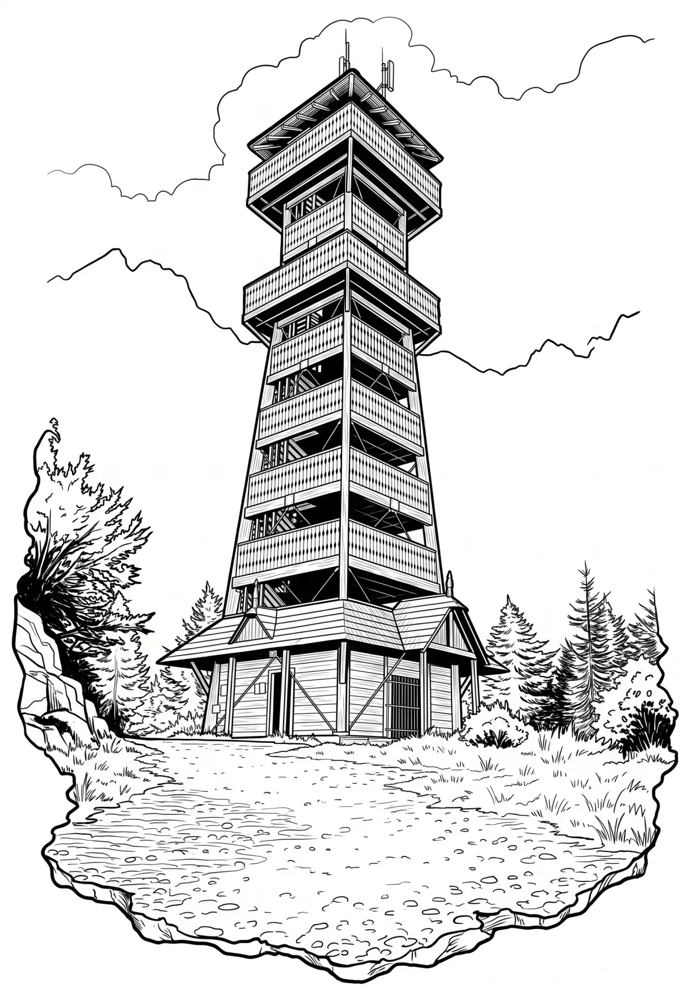

Rozhledna Velký Javorník
Moravskoslezský kraj · 918 m n. m.

technická památka · #067
Velký Javorník (918 m) je hora v podhůří Beskyd, nejvyšší bod Veřovických vrchů. Hora je známé turistické místo s výhledem do širokého okolí, na vrcholu stojí turistická chata z roku 1935, která je otevřena celoročně (mimo pondělí), ale neposkytuje ubytování. Od léta 2013 je na vrcholu také nová rozhledna. Ročně na Velký Javorník vystoupí asi 30 tisíc turistů.